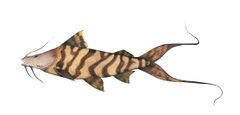
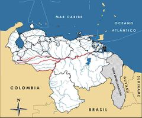

Brachyplatystoma juruense
| Bagre cunaguaro | |
|---|---|
|  | |
| Riesgo de extinción | |
 En peligro (UICN) | |
| Clasificación científica | |
| Reino: | Animalia |
| Filo: | Chordata |
| Clase: | Actinopterygii |
| Orden: | Siluriformes |
| Familia: | Pimelodidae |
| Género: | Brachyplatystoma |
| Especie: | Brachyplatystoma juruense |
| Nombre binomial | |
|
Brachyplatystoma juruense Boulenger, 1898 | |
| Distribución | |
|
 Mapa de distribución de Brachyplatystoma juruense | |
Contenido
Información de Evaluación
- Categoría y Criterio Regional: En Peligro A2cd
- Fecha de Evaluación Regional: 2015
- Evaluadores: Jesús Morales-Campos y Ariany García-Rawlins
- Categoría y Criterio Global: No Evaluado
Justificación
Evaluaciones Previas
1999: No Evaluado (NE)
2008: Vulnerable (VU)
Información General
Nombres comunes
Bagre cunaguaro, manta negra, bagre manto, apuy, siete babas, zebra, flamenco, zúngaro alianza, bagre listado, goleen zebra, dourada zebra, zungaro zebra.
Notas taxonómicas
Sinónimos
Descripción
Bagre muy vistoso y de gran tamaño que alcanza tallas hasta 80 cm de longitud total y pesa más de 5 kg. Su cuerpo es alargado, robusto, desnudo, sin escamas ni placas óseas. La cabeza es más larga que ancha y muestra un perfil recto, con ojos pequeños en posición superior. Tiene una boca grande con la mandíbula superior sobresaliente. Su coloración distingue a la especie de todas las demás del género: el fondo de su cuerpo es de verde claro a amarillento con al menos once franjas negras transversales anchas, alternadas con bandas claras de fondo castaño. La cabeza es de grisácea a negruzca pero sin cintas. La aleta caudal, profundamente ahorquillada con los radios extremos muy prolongados, exhibe líneas negras irregulares (Barbarino y Taphorn 1995). Se alimenta básicamente de peces, lo que le convierte en predador de muchas especies.
Distribución
Brachyplatystoma juruense registra una distribución suramericana con base en las cuencas de los ríos Amazonas y Orinoco. En este último es común en el sector occidental venezolano, hacia el delta interno del bajo Apure. Se captura sobre todo en las aguas de los ríos Sarare, Caparo, Meta, Arauca, Apure y Orinoco (Barbarino y Taphorn 1995, Novoa 2002). Es posible que en la Orinoquía se trate en realidad de dos especies diferentes, distinguibles por el patrón de bandas laterales del cuerpo (continuas y discontinuas). De ser así, quizás sea válida la especie Ginesia cunaguaro descrita por Fernández-Yépez en 1951. La típica Brachyplatystoma juruense tiene franjas continuas, mientras que Ginesia cunaguaro las muestra discontinuas o quebradas. Desafortunadamente el holotipo de esta última desapareció. Es un pez de fondo que solo habita en aguas blancas del cauce principal de grandes ríos y zonas de inundación (Barbarino y Taphorn 1995).
- Sistema: Dulceacuícola
- Bioregión:
- Intervalo altitudinal (m): Temporalmente sin información
- Endémica: No
Situación
Es una especie muy importante en el sistema Apure-Arauca, en especial en los ríos que bajan del piedemonte y en el sector occidental del Orinoco, contribuyendo con 0,2% a 0,9% del total de la producción pesquera continental del país (Novoa 2002). En la cuenca del Apure ocupa la posición número 14 entre las 43 especies de interés pesquero y aporta 0,7% de la ictiomasa cosechada anualmente. Para toda la cuenca del Apure, los desembarques totales muestran un incremento de 1994 a 1997, año en el que cae de forma abrupta. Se captura ocasionalmente en la cuenca del Apure, donde basados en datos de 1997 a 2000, se observaron fluctuaciones anuales que variaron de 150 a 850 g/hora/115 m red arrastre. Estadísticas del Instituto Nacional de Pesca (Inapesca) muestran una disminución en la producción nacional cercana a 90% desde el año 2000 a 2002 (110762 a 13637 kg/año).
- EOO (km2): Temporalmente sin información
- AOO (km2): Temporalmente sin información
- Tendencia Poblacional: Decreciendo
Amenazas
Como otros recursos pesqueros de la Orinoquía, su principal amenaza es el incumplimiento de la normativa legal vigente. Con frecuencia aparece en los mercados de venta por debajo de la talla mínima de captura permitida por las autoridades. En la cuenca media del río Portuguesa ha desaparecido prácticamente de las pesquerías comerciales, lo cual puede atribuirse a la pérdida de hábitat por la elevada sedimentación y la consecuente baja del caudal óptimo para la especie (Castillo, O. 2001).
Conservación
No existen muchas restricciones a la pesca comercial, excepto aquellas de carácter genérico incluidas en las normativas ministeriales. Sus pesquerías están reguladas mediante dos resoluciones en las cuales: se reglamenta la pesca en el río Orinoco y sus afluentes ubicados en los estados Amazonas, Anzoátegui, Bolívar, Guárico, Monagas y Delta Amacuro (A. Barbarino obs. pers.); se norma la pesca comercial en los ríos y cuerpos de agua ubicados en los estados Apure, Barinas, Cojedes, Portuguesa y Táchira (A. Barbarino obs. pers.), y se establece que la talla mínima de captura debe ser superior a 65 cm desde la punta de la cabeza hasta la base de la cola (longitud estándar) (Novoa 2002, Inapesca 2002). Se debe garantizar el cumplimiento a cabalidad de estas reglas legales vigentes. En el Apure, la talla mínima de captura debería ser de 40 cm para las hembras y 45 cm para los machos (Castillo, O. 1988). En el sistema del río Apure-Arauca (bajo llano), la talla media de maduración sexual (L50) es de 55 cm para las hembras y 45 cm para los machos (Castillo, O. 1988). Se recomienda a las autoridades vigilar que se mantenga el caudal actual en las cabeceras de los principales afluentes del río Orinoco, evitando los procesos de deforestación de las cuencas altas.
Autorías
Autores originales
Aniello Barbarino, Otto Castillo, Daniel Novoa (†) y Carlos A. Lasso
Colaboradores
Ilustrador
Ximenamaria Rausseo
Referencias
- Barbarino, A. y Taphorn, D. (1995). Especies de la pesca deportiva. Una guía de identificación y reglamentación de los peces de agua dulce en Venezuela. Universidad Nacional Experimental de los Llanos Occidentales "Ezequiel Zamora" (UNELLEZ), Fundación Polar. Caracas: Editorial Arte. 153 pp.
- Barbarino, A., Castillo, O., Novoa, D. y Lasso, C. A. (2015). Bagre cunaguaro, Brachyplatystoma juruense. En: J.P. Rodríguez, A. García-Rawlins y F. Rojas-Suárez (eds.) Libro Rojo de la Fauna Venezolana. Cuarta edición. Provita y Fundación Empresas Polar, Caracas, Venezuela. Recuperado de: animalesamenazados.provita.org.ve/content/bagre-cunaguaro Lun, 29/01/2018 - 12:30
- Castillo, O. (1988). Aspectos bioecológicos sobre los peces comerciales del bajo llano con énfasis en los bagres (Orden Siluriformes). Maestría en Zoología, Trabajo de Grado, Universidad Central de Venezuela, Instituto de Zoología Tropical. Caracas. 114 pp.
- Castillo, O. (2001). Ecología de la reproducción de los bagres comerciales del río Portuguesa. Trabajo de Ascenso a la categoría de Profesor Asociado, Programa de Recursos Naturales Renovables, Vicerrectorado de Producción Agrícola, Universidad Nacional Experimental de los Llanos Occidentales "Ezequiel Zamora". Guanare: 120 pp.
- Novoa, D. (2002). Los recursos pesqueros del eje fluvial Orinoco-Apura: presente y futuro. Editorial Exlibris. Ministerio de Agricultura y Tierras, INAPESCA. Caracas. 148 pp.
- Rodríguez, J. P. y Rojas-Suárez, F. (1999). Libro Rojo de la Fauna Venezolana, segunda edición. PROVITA, Fundación Polar. Caracas. 444 pp.
- Rodríguez, J. P. y Rojas-Suárez, F. (Eds.) (2008). Libro Rojo de la Fauna Venezolana, tercera edición. Provita y Shell Venezuela, S. A. Caracas, Venezuela. 364 pp.